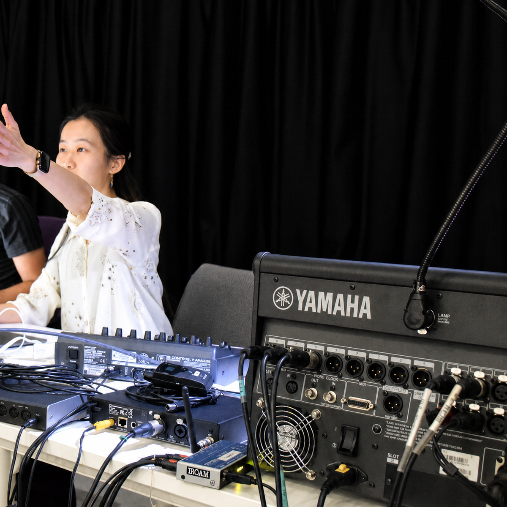

01
制作を始める
作曲やDTMを始めたい方。楽譜の読み方や音楽理論からでも進められます。
作曲レッスンを見るATELIER COMPOSITION SON / ONLINE INDIVIDUAL LESSONS
作曲・音楽理論・DTM・電子音響を、制作中の楽譜、音源、DAWセッション、まだ形になっていない問いから個別に扱います。

ジュネーブ高等音楽院音楽教育修士
IRCAM作曲研究課程2021-2022
スイスの音楽院での指導経験
日本・スイス・フランスでの制作実践
WHO THIS IS FOR
01
作曲やDTMを始めたい方。楽譜の読み方や音楽理論からでも進められます。
作曲レッスンを見る02
独学で曖昧になった理論や、DAW・録音環境を、制作中の作品に沿って整理します。
DTMレッスンを見る03
作品、音源、ポートフォリオ、音大・芸大受験や海外音楽院への提出物を検討します。
音楽理論・受験対策を見るWHAT YOU CAN STUDY
01
02
03
受験、ポートフォリオ、公募、継続プロジェクトも個別に扱います。
HOW IT WORKS
これまでの経験、学びたいこと、使っているソフトや機材について伺います。
楽譜、音源、DAWプロジェクトなどを使い、必要な理論と技術を学びます。
レッスンの内容を振り返り、次回までに取り組むことを決めます。

INSTRUCTOR
Composer / Artist / Educator
神奈川県生まれの作曲家・アーティストです。クラシック音楽の基礎から、現代音楽、電子音響、サウンドデザイン、Max/MSP、AIを用いた制作まで、一人ひとりの関心や作品に合わせて指導します。
CONCEPT
レッスン内容は、受講者の作品や興味、学びたいことに合わせて決めます。楽譜やDAWの操作だけでなく、実際に音を聴きながら、作品に必要な知識と技術を学びます。
作曲やDTMが初めての方も、すでに作品やポートフォリオを制作している方も受講できます。まずは、何を学びたいか、どんな音を作りたいかを伺います。
音楽を学ぶことは、音をもう一度聴き直すことから始まる。
inspired by Pierre Schaeffer
01
理論やソフトの操作は、制作中の作品や課題に合わせて学びます。
02
音色、響き、空間、時間の感じ方を、実際に音を聴きながら考えます。
03
DAW、Max/MSP、録音、AI、Python、ChatGPT、Codex、電子音響、映像制作などを必要に応じて扱います。
SELECTED WORK
VOICES
作曲・理論を受講 50代女性
オンラインでも通信環境が安定していて、安心して受講できました。こちらの希望や学びたい内容を丁寧に聞いていただき、レッスンに反映してもらえた点がとても良かったです。
DTM・制作相談を受講 30代男性
自分の現在のレベルや目的に合わせて、必要な内容を整理しながら教えていただけたのが印象的でした。短い時間の中でも、今後どのように学んでいけばよいかが明確になりました。
受験・基礎理論を受講 10代女性
限られた時間の中でも、とても分かりやすく丁寧に教えていただきました。初めて学ぶ内容でしたが、楽典の面白さや奥深さを感じることができました。
PRICING
目的や経験に合わせて、単発または継続のレッスンを選べます。
作曲・理論・DTMの基礎を、作品を作りながら学びます。
4800円 / 60分
作品、楽譜、音源、和声・対位法、分析、AIで制作した音源について相談できます。
7500円 / 60分
制作や学習を継続したい方のための月4回プランです。
28000円 / 月4回
楽譜、音源、課題に文章でフィードバックします。
1800円〜
FAQ
はい。楽譜、DTM、音楽理論の経験がなくても受講できます。興味のある音楽や、やってみたいことから始めます。
はい。音大・芸大受験、海外音楽院への出願、作品提出、公募、ポートフォリオについてご相談いただけます。専門的な内容は Individual Session または Monthly Atelier で扱います。
はい。作品の講評、制作方針、ポートフォリオ、機材やソフト選びなど、1回のみのご相談には Individual Session をご利用いただけます。
Reaper、Ableton Live、Logic Pro、Max/MSPなどに対応しています。MIDI・OSC、AI生成ツール、映像を組み合わせた制作もご相談いただけます。
FIRST CONVERSATION
完成した作品や楽譜は必要ありません。現在取り組んでいることや、まだ言葉になっていない疑問から、次に進める内容を一緒に整理します。
30分相談を予約するメール添削 / メールで問い合わせる / 規約を見る